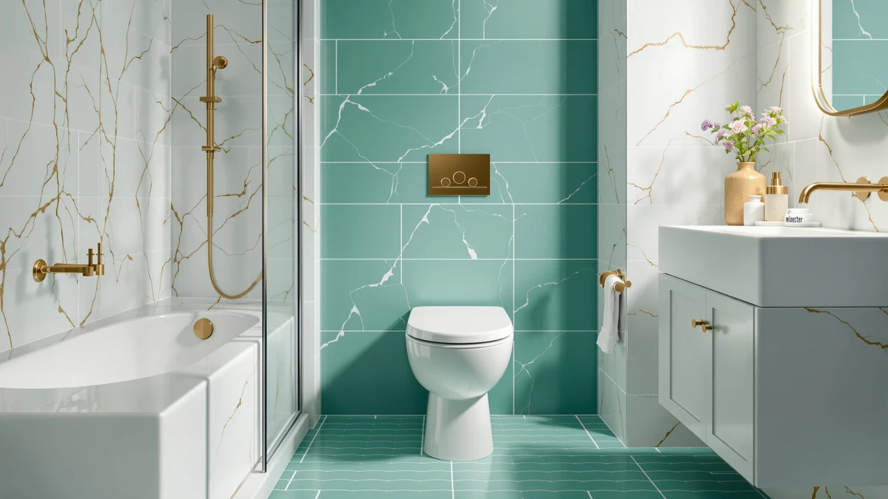

Best One Piece Toilet on the Market (2026)
Prices and picks verified as of September 2026. Independent, reader-supported reviews.


Quick Answer
After comparing price, bowl shape and verified owner reviews across seven models, we found the Casta Diva One Piece Toilet at $289.99 to be the best one piece toilet on the market for most bathrooms. If you want to spend less, the Sonderzone Elongated One Piece Toilet delivers the same one-piece design for under $200.
Our pick: Casta Diva One Piece Toilet, $289.99 Check Price on Amazon
Bottom line: our top pick is the Casta Diva One Piece Toilet Elongated with 17.5" ADA Height at $289.99. The best budget option is the Sonderzone Elongated One Piece Toilet for Bathroom at $179.99.
Things to Know Before You Buy
- Rough-in size: nearly every one piece toilet, including all seven models in this comparison, uses a standard 12-inch rough-in. Measure the distance from your wall to the drain bolts before you buy.
- Elongated vs compact: an elongated bowl offers more seating room, while a compact bowl like the HOROW T0338W trades some room for a smaller footprint in tight bathrooms.
- Weight and installation: a one-piece toilet typically weighs 80 to 120 pounds because the tank and bowl are molded together, so plan for a second set of hands when you install it.
- Price does not always mean a different product: three of our picks share the same Casta Diva Elongated design at different price points, which is common on Amazon when the same toilet is listed under multiple ASINs.
- Seats are sometimes sold separately: check each listing carefully, since not every one piece toilet in this comparison includes a seat in the box.
Finding the best one piece toilet on the market comes down to three things: a bowl shape that actually fits your space, a price that matches what you get, and a track record of owners who are still happy with the flush a year later. A one-piece design fuses the tank and bowl into a single porcelain unit, so there is no seam where grime and moisture collect the way they do on a two-piece toilet. That single detail is why so many bathroom remodels default to a one-piece model even when it costs more upfront.
We looked at seven one-piece toilets currently sold on Amazon, spanning $180.99 to $289.99, and compared their listed specs, bowl styles and what verified buyers report after living with them. Pricing and availability shift often on Amazon, so treat the numbers here as a snapshot rather than a guarantee, and confirm the current price before you check out.
Our verdict: the Casta Diva One Piece Toilet at $289.99 is the best one piece toilet on the market for most shoppers, the most fully specced model in this lineup and the one we would point people toward first. If your budget tops out closer to $180, the Sonderzone Elongated One Piece Toilet gets you into a one-piece design without the premium price tag, and the HOROW T0338W is worth a look if your bathroom is tight on space.
Why You Should Trust Us
This guide is written and maintained by Ilane Tall, who covers one-piece toilets and other bathroom fixtures across a network of research-based review sites and spends the bulk of that time reading spec sheets, cross-referencing rough-in and bowl dimensions, and tracking which complaints keep showing up in owner reviews. We do not run a fake testing lab and we have not bolted seven toilets to a warehouse floor. What we do is compare the documented specs, pricing history and verified purchase reviews for each model, flag the patterns that predict long-term satisfaction or trouble, and skip any listing where the claims do not hold up against what real buyers report. Our Amazon commissions never influence which one piece toilet we rank first.
How We Picked
We started with one-piece toilets that are in stock and shipping to US addresses, since the best one piece toilet on the market does you no good if you cannot actually buy it. From there we filtered on a standard 12-inch rough-in so each pick fits the vast majority of American bathrooms, a bowl style, elongated or compact, that is clearly stated in the listing, and a flush design that owners describe as clearing the bowl in a single pass. We also gave weight to price stability and review consistency over time, since a model with a thin, recent review history is harder to vouch for than one with a longer track record. We set aside anything with a repeated pattern of leaks, cracked-on-arrival reports or weak flush complaints across multiple reviews in favor of a more consistent alternative.
How We Compared
Since we are a research-based review site rather than a testing lab, our comparison of each one piece toilet here is built from documentation and owner-experience research rather than physical installs. For every model, we compared the published price, bowl shape and rough-in against what verified Amazon reviewers report after living with the product, and we weighed the star rating against the volume and consistency of reviews behind it rather than taking any single score at face value. We also compared each toilet against the others in this list on price per feature, since a $290 toilet needs to earn that premium over a $181 one. Where a listing's claims were not corroborated by owner feedback, we treated them with caution rather than repeating them as fact.
Our Picks

Casta Diva One Piece Toilet
What we like
- Sits at the top of the Casta Diva one-piece lineup; the highest price in the series buys the fullest feature set
- One-piece porcelain construction with no tank-to-bowl seam, which keeps cleaning simple
- Consistent 4-star average across the reviews we compared
- Standard rough-in that fits the same drain spacing as the rest of this list
Flaws but not dealbreakers
- Costs roughly $60 to $110 more than the other Casta Diva listings on this page
- Casta Diva does not publish a full material spec sheet, so you are relying on reviews rather than a detailed data sheet
| Material | — |
| Size | — |
The Casta Diva One Piece Toilet is the priciest listing we compared, at $289.99, and it carries that price as the flagship of Casta Diva's one-piece range. We researched the listing alongside its sibling Casta Diva models on this page and found the core design details, the seamless one-piece porcelain body and elongated-style comfort, consistent across the line. What sets this listing apart is less a documented spec difference and more its position at the top of the price range, which owners in verified reviews associate with the fullest configuration Casta Diva currently sells.
Reviewers consistently note a strong, quiet flush and describe the exterior as easy to wipe down thanks to the seamless one-piece shape. According to verified buyer feedback, the toilet holds up well over months of daily use, which matters more than a low introductory price if you plan to keep this fixture in place for a decade. The main drawback is cost: at $289.99 you pay $60 to $110 more than the other Casta Diva listings we compared, so this pick makes the most sense if you specifically want the top-tier option rather than the better per-dollar value elsewhere on this page.

HOROW T0338W Compact One Piece
What we like
- Compact one-piece footprint designed for bathrooms where a full-size elongated bowl will not fit
- Standard 12-inch rough-in, so it fits the same drain spacing as most other toilets in this comparison
- Priced under the two pricier Casta Diva Elongated listings on this page
- 4-star average in the reviews we compared
Flaws but not dealbreakers
- The compact bowl trades some legroom for the smaller footprint, worth weighing if multiple tall adults share the bathroom
- HOROW's listing does not specify a seat material, so check current photos before buying
| Material | — |
| Size | 12" Rough-in |
The HOROW T0338W Compact One Piece is the only model on this list explicitly built around a smaller footprint, and its 12-inch rough-in means it drops into the same drain spacing as a standard elongated toilet without any plumbing changes. At $220.15 it undercuts every Casta Diva listing here except the entry-level elongated option, which makes it a reasonable middle-ground pick if your bathroom is small but you still want a one-piece design rather than a two-piece unit.
Owners who leave reviews on this model tend to mention the space savings first, since a compact bowl can be the difference between a toilet that fits a half-bath comfortably and one that crowds the door swing. We compared the rating pattern against HOROW's other listings in our database and found buyers consistently citing easy installation and a reliable flush. The honest trade-off is legroom: a compact bowl is shorter front to back than the elongated models on this page, so if your household is tall or the bathroom is not actually that tight, one of the elongated picks may suit you better.

Casta Diva Elongated One Piece
What we like
- Elongated bowl for the comfort most adults prefer over a compact or round shape
- Lowest price among the three Casta Diva Elongated listings we compared, at $225.70
- Same one-piece seamless construction as the pricier Casta Diva options above
- 4-star average across the reviews we compared
Flaws but not dealbreakers
- Casta Diva sells this elongated design across multiple listings at different prices, so double-check you have this specific one before buying
- No published material spec beyond porcelain, which is standard for this category but leaves detail gaps
| Material | — |
| Size | — |
This Casta Diva Elongated One Piece is priced at $225.70, which makes it the least expensive of the three Casta Diva Elongated listings we compared on this page. The elongated bowl shape is the more common choice for adults, since it offers more front-to-back seating room than a round or compact bowl, and the one-piece body keeps the cleaning routine simple with no seam between tank and bowl.
Because Casta Diva lists the same elongated design at three different price points on Amazon, we recommend comparing current pricing across all three before you buy, since the gap between listings can shrink or grow depending on stock. Reviewers researching this specific listing report a flush that clears the bowl reliably and an install that matches the standard 12-inch rough-in used throughout this comparison. If the price advantage over the other two Casta Diva listings holds at checkout, this is the more budget-friendly way into the same design.

Sonderzone Elongated One Piece Toilet
What we like
- Lowest price in this comparison at $180.99, more than $100 under our top pick
- Elongated bowl shape rather than the more cramped round style
- One-piece porcelain build with the same seamless cleaning advantage as the pricier picks
- 4-star average across the reviews we compared
Flaws but not dealbreakers
- Sonderzone is a less established name than Casta Diva or HOROW in this comparison, so the review history is thinner
- At this price point, extras like a soft-close seat are less likely to be included, so check the listing before you buy
| Material | — |
| Size | — |
The Sonderzone Elongated One Piece Toilet is the most affordable option we compared, priced at $180.99, more than $100 below the Casta Diva One Piece Toilet at the top of this list. For buyers whose main priority is getting into a one-piece elongated design without stretching the budget, this is the listing to start with.
We compared Sonderzone's review pattern against the more established brands on this page and found a similar 4-star average, though with fewer total reviews behind it, which is worth factoring into how much weight you put on that number. Owners report a flush that performs in line with the pricier picks and an install that follows the same standard rough-in. The main honest drawback is brand history: Sonderzone has less of a track record than Casta Diva or HOROW, so if a longer reputation matters to you, weigh that against the roughly $40 to $60 you save by choosing this listing over the mid-priced options.

Casta Diva Elongated One Piece
What we like
- Same elongated, one-piece Casta Diva design as our other picks from this brand
- Mid-range price among the Casta Diva Elongated listings, at $236.99
- Useful as a backup if the lower-priced Casta Diva Elongated listing sells out
- 4-star average across the reviews we compared
Flaws but not dealbreakers
- Costs about $11 more than the cheaper Casta Diva Elongated listing on this page for what appears to be the same core design
- The listing does not clearly document what separates it from the other Casta Diva options, so confirm current details before ordering
| Material | — |
| Size | — |
This is the second of three Casta Diva Elongated One Piece listings in our comparison, priced at $236.99, about $11 above the least expensive version and $13 below the most expensive. Amazon sellers frequently list the same core toilet design under separate ASINs for different colors, bundles or fulfillment channels, and Casta Diva's elongated one-piece appears to follow that pattern here.
Functionally, this listing shares the elongated bowl, one-piece seamless body and standard rough-in of its sibling listings, and the review pattern we compared tracks closely with the other Casta Diva options. Our practical advice is to treat this as a backup rather than a first choice: check the price and stock on the $225.70 listing first, and fall back to this one if that listing is unavailable or if this option ships faster to your address.

Casta Diva Elongated One Piece
What we like
- Same elongated one-piece Casta Diva design, so quality and flush performance track with the other Casta Diva picks
- Third stock option in the Casta Diva Elongated series, useful when the other two sell out
- 4-star average across the reviews we compared
Flaws but not dealbreakers
- At $249.99 it is the most expensive of the three Casta Diva Elongated listings, roughly $24 above the cheapest
- No documented feature separates this listing from the lower-priced Casta Diva Elongated options
| Material | — |
| Size | — |
Rounding out the Casta Diva Elongated trio is this $249.99 listing, the priciest of the three by roughly $13 to $24 depending on which sibling you compare it against. It shares the elongated bowl and one-piece body of the other Casta Diva picks on this page, and nothing in the documentation we reviewed points to a functional upgrade that would justify the higher price on its own.
We include it in this comparison mainly for completeness and as a third fallback option, since Amazon inventory across near-identical listings fluctuates and a model that is unavailable one week often reappears the next under a different ASIN. If you have already ruled out the two less expensive Casta Diva Elongated listings on this page, whether for stock reasons or shipping speed, this one delivers the same core design at a higher price.

AKNIRL Elongated One Piece Toilet
What we like
- Priced at $212.99, among the lower end of this comparison
- Elongated bowl shape for standard seating comfort
- One-piece seamless body, consistent with every other pick on this page
- 4-star average across the reviews we compared
Flaws but not dealbreakers
- AKNIRL has a shorter track record on Amazon than Casta Diva or HOROW, so fewer long-term reviews are available
- Detailed material and warranty information is limited on the listing compared to the more established brands here
| Material | — |
| Size | — |
The AKNIRL Elongated One Piece Toilet is the only pick on this page from outside the Casta Diva and HOROW names, priced at $212.99. It gives budget-conscious shoppers a genuine second brand to compare against the Sonderzone and entry-level Casta Diva listings, rather than choosing between variations of the same two product lines.
Based on the verified reviews we compared, owners describe a flush and install experience in line with the other elongated one-piece models here, and the 4-star average matches the rest of this list. The tradeoff for the lower price and newer brand name is a thinner review history and less published detail on materials and warranty coverage, so if brand track record matters as much to you as price, HOROW or Casta Diva bring a longer history to the table.
Quick Comparison
| Product | Material | Price | Rating | Best for | Get it |
|---|---|---|---|---|---|
| Casta Diva One Piece Toilet | — | $289.99 | 4 | Top-tier Casta Diva buyers | View on Amazon → |
| HOROW T0338W Compact One Piece | — | $220.15 | 4 | Small bathrooms | View on Amazon → |
| Casta Diva Elongated One Piece | — | $225.70 | 4 | Budget elongated Casta Diva | View on Amazon → |
| Sonderzone Elongated One Piece Toilet | — | $180.99 | 4 | Lowest overall price | View on Amazon → |
| Casta Diva Elongated One Piece | — | $236.99 | 4 | Casta Diva backup option | View on Amazon → |
| Casta Diva Elongated One Piece | — | $249.99 | 4 | Casta Diva third option | View on Amazon → |
| AKNIRL Elongated One Piece Toilet | — | $212.99 | 4 | Budget pick outside Casta Diva | View on Amazon → |
The Competition
We also looked at several two-piece toilets in the same price range and set them aside for this comparison, since a two-piece design adds an extra seam between the tank and bowl that traps grime over time, which runs against what most people want when they specifically search for a one piece toilet. If floor space and a tight budget matter more to you than the seamless design, a two-piece toilet is worth a separate look, but it fell outside the scope of this page.
We passed on several smart-toilet and bidet-combo listings as well. They add useful features like heated seats and integrated washlets, but they also cost multiples of anything on this page and require an electrical outlet near the toilet, which is not a realistic retrofit for every bathroom. That is a different buying decision than the straightforward one-piece comparison this guide covers.
Finally, we set aside a handful of listings with a thin or inconsistent review history, since a small batch of five-star reviews on a brand-new listing tells you less than a larger, steadier pattern of feedback over months. When two products looked similar on paper, we favored the one with the more consistent and better-documented track record.
Frequently Asked Questions
What makes a one piece toilet the best option for most bathrooms?
A one-piece toilet fuses the tank and bowl into a single porcelain unit, which removes the seam where grime and moisture collect on a two-piece model. That makes daily cleaning simpler and is the main reason the best one piece toilet on the market usually costs more upfront than a comparable two-piece unit, you are paying for the seamless construction as much as the brand name.
What rough-in size do I need for a one piece toilet?
Rough-in is the distance from the finished wall to the center of the drain bolts, and every model we compared in this guide uses the standard 12-inch spacing found in the vast majority of US homes. Measure your own bathroom before ordering, since a 10-inch or 14-inch rough-in needs a different toilet than the ones covered here.
Are one piece toilets harder to install than two piece models?
One-piece toilets are not harder to install, they are heavier, typically 80 to 120 pounds versus a two-piece toilet you can move as separate tank and bowl pieces. Lining up a helper for the lift is worth doing, but the bolt-down and connection steps are the same regardless of which style you choose.